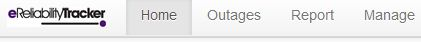
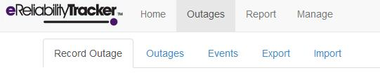
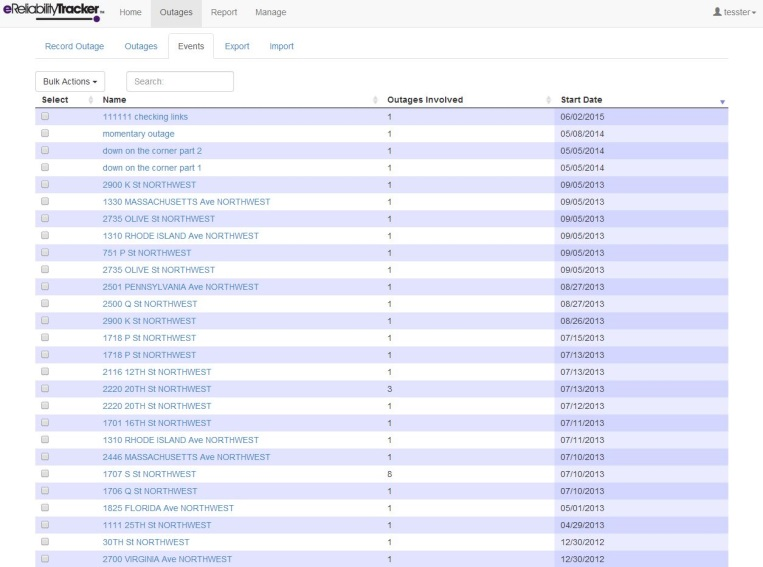

Functions¶
Home¶
At the top of the screen, there should be four tabs, “Home,” “Outages,” “Report,” and “Manage.” If you click “Home,” then it will bring you back to the welcome screen that you started on.
Outages Tab¶
If you click “Outages,” five options will appear underneath the tabs (shown in the image above).
- Record Outage
- Enter a new outage
- Outages
- View all recorded outages
- Events
- Lists all events (each outage is automatically entered as a single event, but outages can be combined to form one event for partial restorations or related outages)
- Export
- Export all outages from a specific time period
- Import
- Import previously recorded events from a CSV file. Supports the old Reliability Tracker 6.2 and the new advanced feature.
Record Outages¶
If you wish to record an outage, click on “Record Outage” and then fill out all of the required information on the form. The top portion of the page is required and the bottom portion contains fields for additional details that you can add for your own convenience.
Required Fields¶
Fields required in order to submit a report:
- Address
This field requires the address of the customer associated with the outage being reported.
Ex: 1875 Connecticut Ave.
- Substation
Substations perform as parts of a generation, transmission, and distribution system. It is an electric system facility.
In the drop down menu, select the specific substation where the outage occurred.
Utilities can use their own naming conventions when naming their substations (more thoroughly described in the Manage section of this manual).
- Circuit
Also called feeders, circuits carry power to load areas from substations. A substation is comprised of a number of incoming and outgoing circuits connected to a bus-bar system. In addition to noting the substation, it is important to note which circuit in the specified substation was relevant to the outage.
In the drop down menu, select the circuit on which the outage occurred.
Utilities can use their own naming conventions when naming their circuits (more thoroughly described in the Manage section of this manual). Circuits are not automatically related to substations so be sure to use a good naming convention and select the proper circuit.
- Primary Cause
In this field, there is a drop down menu with all of the causes of service interruption. It is important to fill out the correct primary cause so that you can analyze the reasons for the outages in your utility and take preventative measures for the future. It is also important to select the most exact cause of the outage. For example, if there is a storm and the wind blows a tree onto a line causing an outage, the tree should be selected as the cause of the outage.
Every service provider may categorize causes differently, but as long as you stay consistent with your own method of categorizing them, you will be able to analyze the causes of your utility’s outages in the future. This cause list follows IEEE recommendations. In situations where the cause of the outage is unknown, the utility should do its best to develop substantial conclusions about the most likely cause based on analysis of similar past interruption events.
Primary Cause: Scheduled
This category includes interruptions that can safely be delayed by the utility personnel and customers can be notified in advance.

Primary Cause: Unscheduled
This category includes any interruption that is a result of the actions of the public.

Number of Customers Without Power
Specify, for the utility being addressed, how many customers were without power during the outage being reported. Enter the value in numerical format.
Ex: 158
Time Outage Began
Identify the most accurate time for when the outage began in military time.
Ex: 18:00
Date Outage Began
Indicate the specific date when the outage began.
The format should be: mm/dd/yyyy or you can click on the calendar icon to select the date.
Ex: 02/16/2012
Is Partial Restoration?
Partial restoration is a way to note that this recorded outage is one of several related to a single restoration event.
In the old eReliability Tracker, users had the option to checkmark a box to mark an outage as partially restored. If users wish to search and filter for these old outages, they may find them by clicking and editing an outage and scrolling down to find this work detail:

Now, users can navigate to the “”Events” tab, select an outage, and mark it as Yes or No in the Is Part of Restoration? column:

Note
Clicking on the drop-down Bulk Actions button allows you to mark an outage as Yes or No.
Don’t forget to group partial restorations of outages together in the “Events” tab.
System Characteristics¶
Fields not required in order to submit a report (these are additional details that are recommended to be filled out)
Descriptive Characteristics
Describe the utility’s electrical distribution system.
Options: Underground or Overhead
Electrical distribution systems were traditionally overhead; however, now there are many systems that have been converted to an underground distribution system. Choose whether the utility the outage report is being made for is an underground or overhead electrical distribution system.
System Voltage at Site
The voltage information should be based on the highest voltage level affected by the outage event.
Circuit Type
Choose the type of circuit that your utility system uses.
Options include: Radial, primary loop, primary selective, secondary selective, and spot network
- Radial
This is the most common and simple distribution system. It can be completely overhead or underground. It is connected to only one source of power.
- Primary loop
Also known as open ring system. Provides power from two feeders.
- Primary selective
This type of circuit uses some of the same basic components as the primary loop. Ahead of the consumer’s transformer, an automatic switch is provided, which helps to limit interruptions in the event of loss of feeder.
- Secondary selective
This system uses two transformers from two different primary feeders. Unlike the primary selective system, it uses low voltage switching. This system is generally used for industrial plants.
- Spot networks
This system is very similar to a closed ring system. It is a network, which means that it utilizes two or more transformer units in parallel. It is most commonly used in high load density areas.
Phases Impacted
A three-phase electric power system is a type of polyphase system. It is a common method of electric power transmission and tends to be a much smoother form of electricity than the single or two phase systems.
Select in the drop down menu exactly which phases (which overhead line(s)) were affected by the outage.
Options include any combination of phase 1, 2, and 3 ( A, B, and C).
Load Interrupted (in kVA)
This is the value, in kilovolt-amps, of connected load interruptions.
Miscellaneous Details¶
Fields not required in order to submit a report (these are additional details that are recommended to be filled out).
Key Accounts Without Power
These are the key customers for which the utility wants to track service and reliability levels. These customers can be referenced when creating a new outage. Information on how these customers can be created can be found under the Manage section of this manual.
How was the Outage Reported?
Options include: Customer call-in, Outage Management System, and Other
Total Work Hours to Complete Restoration
Identify how many work hours it took to complete total restoration of the utility. Enter value in numerical format.
Ex: 5.
Total Customers
Number of customers served by utility.
Work Details¶
Equipment Action
This identifies if the notes or equipment used relative to the outage are for restoration, repair, replacement, or a work detail.
Equipment
This is the actual equipment used. The list is drawn from the equipment list created in the Manage section.
Notes
This area is for notes related to the restoration, repair, replacement, or work details for an outage.
How to Record an Outage¶
Once the required information and additional details are filled out, click “Create Outage” and you will be automatically taken to the list of outages that you have for your utility. If the addition was successful, there should be a green label at the top of the page that says it was successfully added.
From that page, if you wish to record another outage, click on “Create New Outage” on the top right corner of the page, which will take you back to the form to record a new outage.
Outages¶
If you click on “Outages” sub tab you will be taken to the listing of recorded outages for your utility. From this page, you may click on “Create an Outage” to record another outage. You can also search, edit, or delete the recorded outages.
When searching for an outage, all eight (8) fields you see listed across the screen will be searched as you type into the search box. For a more detailed report you will want to use the “Export” function to create a spreadsheet.
On this “Outages” page, you have the ability to delete outages by placing checks next to the outages you would like to delete and then clicking on the “Bulk Action” drop down menu and selecting “Delete Selected Outages.”
Warning
Once an outage is deleted it is permanently deleted from the system.
By clicking on any of the outages, you can edit the details that were recorded for them. This page displays the following details of the listed outages: address, utility, substation, circuit, customers out.
Events¶
If you click on “Events,” you will come across a page with a listing of all of the events that have been recorded for your utility. The details of each event shown on this page include: name, outages involved, and start date. An event is a collection of outages, typically partial restorations related to single outages.
On this page, you have the ability to delete events by placing checks next to the events you would like to delete and then clicking on the “Bulk Action” drop down menu and selecting “Delete Selected Events.”
By clicking on one of the events, you may edit the name of the event, edit any of the outages involved with the event, or sort the outages listed. This is a good way to group partial outages together to be treated as one event in the system.
To sort the outages listed within an event, you have to click the boxes of those outages that you would like to move, and click the “Bulk Action” drop down menu, and then choose either “Separate Selected Outages into Unique Event” or “Delete Selected Outages.”
Once you are done with any changes on this page, click “Update Event” and a green label should appear on the top of the screen that says the modification was successful.
Export¶
Only Leaders are able to view this button. When you click on “Export” you will see two boxes where you can input the date range of the outages you want reported. Once you’ve chosen your dates click the export button to see all your data in a spreadsheet format. You may want to export data to perform additional analysis.
Import¶
Use this function to upload any data you already have recorded into this eReliability software. The spreadsheet you upload should be arranged in the following way in CSV format:

Note
There cannot be any headers in the spreadsheet you are trying to import.